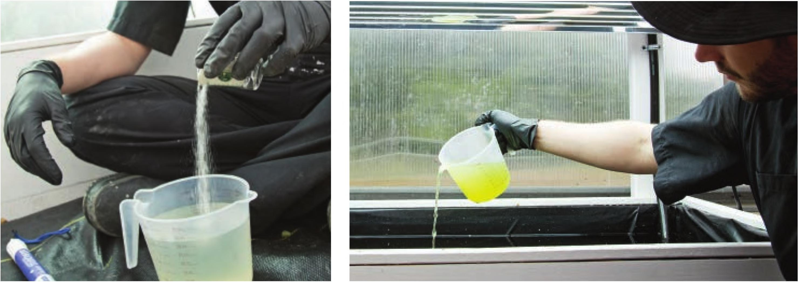

LITTLE EFFORT: TOP OFF This method is similar to set and forget, but as the water level drops the grower simply adds water to maintain the original level. Over time this method will dilute the nutrient concentration in the reservoir and nutrient deficiencies may appear on the crop. This method can work for fast-growing crops with low nutrient demands like microgreens, leafy greens, and some herbs. This method sometimes works for some larger crops depending on the system, but there is some risk of overdiluting the nutrient solution, especially when using a small reservoir. SOME EFFORT: TOP OFF AND AMEND The most common method for maintaining a nutrient solution in a hydroponic garden is to top off the reservoir as mentioned in the previous method, then add more fertilizer to the reservoir to maintain a target EC. Please see the appendix for example target ECs for common hydroponic crops. After adding fertilizer to reach the target EC, the grower adjusts the pH of the nutrient solution using either an acid (pH down) or base (pH up). There are many easy-to-use pH down and pH up products available in grow stores, and there are DIY options that are often less optimal but definitely usable. For pH down, some hydroponic gardeners use vinegar or lemon juice and for pH up some use baking soda. To top off and amend the solution in your system, you will need an EC meter, hydroponic fertilizer, a measuring cup, a pH meter, pH down and pH up amendments, and a pipette (eyedropper). Measure the starting EC after adding water to the reservoir. Mix dry fertilizers in a separate Add fertilizer in small increments to avoid container before adding to the overfertilizing. reservoir. It is important to fully dissolve dry fertilizers before adding them to the reservoir. 158 DIY HYDROPONIC GARDENS
